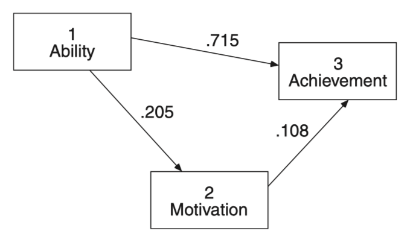
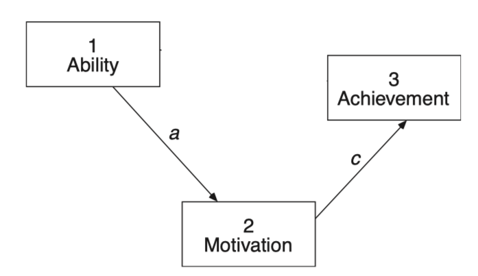

Load libraries
library(haven)
library(psych)
library(tidyverse)
library(lavaan)
library(semTools)
library(manymome)Multiple Regression and Beyond (3e) by Timothy Z. Keith
library(haven)
library(psych)
library(tidyverse)
library(lavaan)
library(semTools)
library(manymome)covariance matrix
공분산 covariance of \(x, ~ y\): \(Cov(x, y)\) = \(\displaystyle\frac{1}{n-1} \sum_{i=1}^{n} (x_i - \bar{x})(y_i - \bar{y})\)
분산 variance of \(x\): covarance of \(x, ~ x\): \(V(x) = Cov(x, x)\) = \(\displaystyle\frac{1}{n-1} \sum_{i=1}^{n} (x_i - \bar{x})^2\)
상관 correlation of \(x, ~ y\): \(Cor(x, y)\) = \(\displaystyle\frac{Cov(x, y)}{\sigma_x \sigma_y}\)
where \(\sigma_x\) and \(\sigma_y\) are the standard deviations of x and y respectively.
변수들 간의 상관계수/공분산 행렬을 알면 회귀계수를 구할 수 있음. 반대로, 회귀계수들을 알면 상관계수/공분산 행렬을 구할 수 있음.

Source: pp. 258-259, Multiple Regression and Beyond (3e) by Timothy Z. Keith
\(a = r_{12}\)
\(\displaystyle b = \frac{r_{13} - r_{12} r_{23}}{1 - r_{12}^2}\)
\(\displaystyle c = \frac{r_{23} - r_{12} r_{13}}{1 - r_{12}^2}\)
# variable names
vars <- c("fam_back", "ability", "motivate", "courses", "achieve")
# Correlation matrix
lower <- "
1.000
.417 1.000
.190 .205 1.000
.372 .498 .375 1.000
.417 .737 .255 .615 1.000"
# standard deviations
sd <- c(1.000, 15.000, 10.000, 2.000, 10.000)
achi_cov <- getCov(lower, names = vars, sd = sd)
achi_cov |> print() fam_back ability motivate courses achieve
fam_back 1.000 6.255 1.90 0.744 4.17
ability 6.255 225.000 30.75 14.940 110.55
motivate 1.900 30.750 100.00 7.500 25.50
courses 0.744 14.940 7.50 4.000 12.30
achieve 4.170 110.550 25.50 12.300 100.00공분산 행렬을 이용해서 회귀계수를 구하면,
paths <- "
achieve ~ b*ability + c*motivate
motivate ~ a*ability
"
achi_model <- sem(paths, sample.cov = achi_cov, sample.nobs = 1000)
parameterEstimates(achi_model, standardized = "std.all", ci = FALSE) |> print() lhs op rhs label est se z pvalue std.all
1 achieve ~ ability b 0.477 0.014 33.143 0 0.715
2 achieve ~ motivate c 0.108 0.022 5.030 0 0.108
3 motivate ~ ability a 0.137 0.021 6.623 0 0.205
4 achieve ~~ achieve 44.511 1.991 22.361 0 0.446
5 motivate ~~ motivate 95.702 4.280 22.361 0 0.958
6 ability ~~ ability 224.775 0.000 NA NA 1.000
한편, 제한된 다음과 같은 모형에 대한 회귀계수를 구하면,

paths <- "
achieve ~ 0*ability + c*motivate # ability의 계수를 0으로 고정; 효과 크기 제로!
motivate ~ a*ability
"
achi_model <- sem(paths, sample.cov = achi_cov, sample.nobs = 100)
parameterEstimates(achi_model, standardized = "std.all", ci = FALSE) |> print() lhs op rhs label est se z pvalue std.all
1 achieve ~ ability 0.000 0.000 NA NA 0.000
2 achieve ~ motivate c 0.255 0.097 2.637 0.008 0.255
3 motivate ~ ability a 0.137 0.065 2.094 0.036 0.205
4 achieve ~~ achieve 92.563 13.090 7.071 0.000 0.935
5 motivate ~~ motivate 94.840 13.412 7.071 0.000 0.958
6 ability ~~ ability 222.750 0.000 NA NA 1.000이 때, 이 회귀계수들을 이용해 상관계수를 역으로 계산하면; implied/predicted correlation matrix
# implied/predicted correlation matrix
lavInspect(achi_model, "cor.ov") |> print() achiev motivt abilty
achieve 1.000
motivate 0.255 1.000
ability 0.052 0.205 1.000실제 상관계수와 비교해보면,
# observed correlation matrix
achi_cov[c(5, 3, 2), c(5, 3, 2)] |> cov2cor() |> print() achieve motivate ability
achieve 1.000 0.255 0.737
motivate 0.255 1.000 0.205
ability 0.737 0.205 1.000이 때, 원래의 상관계수를 복구하지 못한다면 데이터와 모형이 맞지 않는다고 볼 수 있음!
lavaan website: estimators and more
기본적으로 ML (Maximum Likelihood) 방법을 사용
# generate a dataset with the same covariance matrix
set.seed(123)
achi <- semTools::kd(achi_cov, n = 1000, type = "exact") |> as_tibble()
achi |> print()# A tibble: 1,000 x 5
fam_back ability motivate courses achieve
<dbl> <dbl> <dbl> <dbl> <dbl>
1 0.220 -6.13 -2.48 -2.95 -8.33
2 -1.28 -0.980 -6.90 1.99 0.105
3 -1.19 -15.8 -6.33 -1.19 -9.33
4 -1.32 -5.75 2.82 3.14 6.53
5 1.18 12.1 3.58 2.58 3.64
6 1.72 21.7 -9.78 0.0788 11.5
7 -0.629 -4.56 2.07 -2.26 -0.556
8 -0.559 -6.81 -7.23 -0.0846 -3.99
9 0.706 10.4 18.6 2.09 21.5
10 1.02 4.77 11.2 1.17 5.92
# i 990 more rows# check the covariance matrix
cov(achi) |> print() fam_back ability motivate courses achieve
fam_back 1.0010010 6.261261 1.901902 0.7447447 4.174174
ability 6.2612613 225.225225 30.780781 14.9549550 110.660661
motivate 1.9019019 30.780781 100.100100 7.5075075 25.525526
courses 0.7447447 14.954955 7.507508 4.0040040 12.312312
achieve 4.1741742 110.660661 25.525526 12.3123123 100.100100Source: p. 270, Multiple Regression and Beyond (3e) by Timothy Z. Keith
achi_paths <- "
achieve ~ fam_back + ability + motivate + courses
courses ~ fam_back + ability + motivate
motivate ~ fam_back + ability
ability ~ fam_back
"
achi_model <- sem(achi_paths, data = achi)
summary(achi_model, standardized = TRUE, header = FALSE) |> print()
Parameter Estimates:
Standard errors Standard
Information Expected
Information saturated (h1) model Structured
Regressions:
Estimate Std.Err z-value P(>|z|) Std.lv Std.all
achieve ~
fam_back 0.695 0.217 3.202 0.001 0.695 0.069
ability 0.367 0.015 23.758 0.000 0.367 0.551
motivate 0.013 0.021 0.604 0.546 0.013 0.013
courses 1.550 0.119 12.996 0.000 1.550 0.310
courses ~
fam_back 0.330 0.057 5.838 0.000 0.330 0.165
ability 0.050 0.004 13.194 0.000 0.050 0.374
motivate 0.053 0.005 10.158 0.000 0.053 0.267
motivate ~
fam_back 1.265 0.338 3.741 0.000 1.265 0.127
ability 0.101 0.023 4.502 0.000 0.101 0.152
ability ~
fam_back 6.255 0.431 14.508 0.000 6.255 0.417
Variances:
Estimate Std.Err z-value P(>|z|) Std.lv Std.all
.achieve 37.103 1.659 22.361 0.000 37.103 0.371
.courses 2.608 0.117 22.361 0.000 2.608 0.652
.motivate 94.475 4.225 22.361 0.000 94.475 0.945
.ability 185.875 8.313 22.361 0.000 185.875 0.826
1 - 잔차의 표준화된 분산(variance): .xxxx 표시
직접 출력하는 옵션: rsquare = TRUE
summary(achi_model, standardized = TRUE, rsquare = TRUE, header = FALSE) |> print()
Parameter Estimates:
Standard errors Bootstrap
Number of requested bootstrap draws 1000
Number of successful bootstrap draws 965
Regressions:
Estimate Std.Err z-value P(>|z|) Std.lv Std.all
achieve ~
fam_back 0.695 0.221 3.141 0.002 0.695 0.069
ability 0.367 0.016 23.074 0.000 0.367 0.551
motivate (a) 0.013 0.021 0.610 0.542 0.013 0.013
courses (b1) 1.550 0.119 12.974 0.000 1.550 0.310
courses ~
fam_back 0.330 0.059 5.604 0.000 0.330 0.165
ability 0.050 0.004 13.685 0.000 0.050 0.374
motivate (b2) 0.053 0.005 9.984 0.000 0.053 0.267
motivate ~
fam_back 1.265 0.331 3.826 0.000 1.265 0.127
ability 0.101 0.024 4.270 0.000 0.101 0.152
ability ~
fam_back 6.255 0.433 14.455 0.000 6.255 0.417
Variances:
Estimate Std.Err z-value P(>|z|) Std.lv Std.all
.achieve 37.103 1.730 21.450 0.000 37.103 0.371
.courses 2.608 0.121 21.579 0.000 2.608 0.652
.motivate 94.475 4.205 22.470 0.000 94.475 0.945
.ability 185.875 8.120 22.891 0.000 185.875 0.826
R-Square:
Estimate
achieve 0.629
courses 0.348
motivate 0.055
ability 0.174
Defined Parameters:
Estimate Std.Err z-value P(>|z|) Std.lv Std.all
indirect 0.083 0.011 7.739 0.000 0.083 0.083
total 0.095 0.021 4.549 0.000 0.095 0.095
header: TRUEfit.measures: FALSEestimates: TRUEci: FALSEfmi: FALSEstandardized: FALSE / “std.all”, “std.lv”rsquare: FALSEmodindices: FALSEstd.nox: FALSEremove.step1: TRUEremove.unused: TRUEcov.std: TRUEnd: 3Llavaan doc 참고;
If header = TRUE, the header section (including fit measures) is printed.
If fit.measures = TRUE, additional fit measures are added to the header section. The related fm.args list allows to set options related to the fit measures. See fitMeasures for more details.
If estimates = TRUE, print the parameter estimates section.
If ci = TRUE, add confidence intervals to the parameter estimates section.
If fmi = TRUE, add the fmi (fraction of missing information) column, if it is available.
If standardized=TRUE or a character vector, the standardized solution is also printed (see parameterEstimates). Note that SEs and tests are still based on unstandardized estimates. Use standardizedSolution to obtain SEs and test statistics for standardized estimates.
The std.nox argument is deprecated; the standardized argument allows “std.nox” solution to be specifically requested.
If remove.step1, the parameters of the measurement part are not shown (only used when using sam().) If remove.unused, automatically added parameters that are fixed to their default (0 or 1) values are removed.
If rsquare=TRUE, the R-Square values for the dependent variables in the model are printed.
If efa = TRUE, EFA related information is printed. The related efa.args list allows to set options related to the EFA output. See summary.efaList for more details.
If modindices=TRUE, modification indices are printed for all fixed parameters.
The argument nd determines the number of digits after the decimal point to be printed (currently only in the parameter estimates section.)
Direct, Indirect, and Total Effects
Source: p. 272, Multiple Regression and Beyond (3e) by Timothy Z. Keith
movivation -> achievement
achi_paths <- "
achieve ~ fam_back + ability + a*motivate + b1*courses
courses ~ fam_back + ability + b2*motivate
motivate ~ fam_back + ability
ability ~ fam_back
indirect := b1*b2
total := a + b1*b2
"
achi_model <- sem(achi_paths, data = achi)
summary(achi_model, standardized = TRUE, header = FALSE) |> print()
Parameter Estimates:
Standard errors Standard
Information Expected
Information saturated (h1) model Structured
Regressions:
Estimate Std.Err z-value P(>|z|) Std.lv Std.all
achieve ~
fam_back 0.695 0.217 3.202 0.001 0.695 0.069
ability 0.367 0.015 23.758 0.000 0.367 0.551
motivate (a) 0.013 0.021 0.604 0.546 0.013 0.013
courses (b1) 1.550 0.119 12.996 0.000 1.550 0.310
courses ~
fam_back 0.330 0.057 5.838 0.000 0.330 0.165
ability 0.050 0.004 13.194 0.000 0.050 0.374
motivate (b2) 0.053 0.005 10.158 0.000 0.053 0.267
motivate ~
fam_back 1.265 0.338 3.741 0.000 1.265 0.127
ability 0.101 0.023 4.502 0.000 0.101 0.152
ability ~
fam_back 6.255 0.431 14.508 0.000 6.255 0.417
Variances:
Estimate Std.Err z-value P(>|z|) Std.lv Std.all
.achieve 37.103 1.659 22.361 0.000 37.103 0.371
.courses 2.608 0.117 22.361 0.000 2.608 0.652
.motivate 94.475 4.225 22.361 0.000 94.475 0.945
.ability 185.875 8.313 22.361 0.000 185.875 0.826
Defined Parameters:
Estimate Std.Err z-value P(>|z|) Std.lv Std.all
indirect 0.083 0.010 8.003 0.000 0.083 0.083
total 0.095 0.021 4.448 0.000 0.095 0.095
Bootstrapping으로 추정
achi_model <- sem(
achi_paths,
data = achi,
se = "bootstrap", # standard errors
bootstrap = 1000, # number of bootstrap samples
)
summary(achi_model, standardized = TRUE, header = FALSE, ci = TRUE) |> print()
Parameter Estimates:
Standard errors Bootstrap
Number of requested bootstrap draws 1000
Number of successful bootstrap draws 962
Regressions:
Estimate Std.Err z-value P(>|z|) ci.lower ci.upper
achieve ~
fam_back 0.695 0.214 3.253 0.001 0.272 1.150
ability 0.367 0.016 23.685 0.000 0.334 0.396
motivate (a) 0.013 0.020 0.625 0.532 -0.027 0.052
courses (b1) 1.550 0.121 12.767 0.000 1.313 1.771
courses ~
fam_back 0.330 0.057 5.814 0.000 0.211 0.437
ability 0.050 0.004 13.570 0.000 0.043 0.057
motivate (b2) 0.053 0.005 10.221 0.000 0.043 0.063
motivate ~
fam_back 1.265 0.351 3.607 0.000 0.568 1.973
ability 0.101 0.025 4.112 0.000 0.054 0.147
ability ~
fam_back 6.255 0.436 14.350 0.000 5.396 7.099
Std.lv Std.all
0.695 0.069
0.367 0.551
0.013 0.013
1.550 0.310
0.330 0.165
0.050 0.374
0.053 0.267
1.265 0.127
0.101 0.152
6.255 0.417
Variances:
Estimate Std.Err z-value P(>|z|) ci.lower ci.upper
.achieve 37.103 1.718 21.601 0.000 33.508 40.317
.courses 2.608 0.116 22.453 0.000 2.363 2.842
.motivate 94.475 4.170 22.656 0.000 85.326 102.484
.ability 185.875 8.044 23.108 0.000 171.185 202.593
Std.lv Std.all
37.103 0.371
2.608 0.652
94.475 0.945
185.875 0.826
Defined Parameters:
Estimate Std.Err z-value P(>|z|) ci.lower ci.upper
indirect 0.083 0.011 7.870 0.000 0.063 0.104
total 0.095 0.021 4.617 0.000 0.055 0.138
Std.lv Std.all
0.083 0.083
0.095 0.095
parameterEstimates(
achi_model,
boot.ci.type = "bca.simple", # bias-corrected and accelerated
standardized = "std.all" # standardized estimates
) |> filter(label != "") |> print() lhs op rhs label est se z pvalue ci.lower ci.upper
1 achieve ~ motivate a 0.013 0.020 0.625 0.532 -0.027 0.053
2 achieve ~ courses b1 1.550 0.121 12.767 0.000 1.313 1.771
3 courses ~ motivate b2 0.053 0.005 10.221 0.000 0.044 0.065
4 indirect := b1*b2 indirect 0.083 0.011 7.870 0.000 0.064 0.106
5 total := a+b1*b2 total 0.095 0.021 4.617 0.000 0.057 0.140
std.all
1 0.013
2 0.310
3 0.267
4 0.083
5 0.095패키지를 이용해 경로를 찾아 추정: manymome 참조
library(manymome)
# All specific indirect paths from ability to achieve
paths <- all_indirect_paths(achi_model,
x = "ability",
y = "achieve"
)
paths |> print()Call:
all_indirect_paths(fit = achi_model, x = "ability", y = "achieve")
Path(s):
path
1 ability -> courses -> achieve
2 ability -> motivate -> achieve
3 ability -> motivate -> courses -> achieveind_est_std <- many_indirect_effects(paths,
fit = achi_model, R = 1000,
boot_ci = TRUE, boot_type = "bc",
standardized_x = TRUE,
standardized_y = TRUE
)
ind_est_std
== Indirect Effect(s) (Both x-variable(s) and y-variable(s) Standardized) ==
std CI.lo CI.hi Sig
ability -> courses -> achieve 0.116 0.094 0.140 Sig
ability -> motivate -> achieve 0.002 -0.004 0.010
ability -> motivate -> courses -> achieve 0.013 0.007 0.020 Sig
- [CI.lo to CI.hi] are 95.0% bias-corrected confidence intervals by
nonparametric bootstrapping with 1000 samples.
- std: The standardized indirect effects.
# total indirect effect
ind_est_std[[1]] + ind_est_std[[2]] + ind_est_std[[3]]
== Indirect Effect (Both 'ability' and 'achieve' Standardized) ==
Path: ability -> courses -> achieve
Path: ability -> motivate -> achieve
Path: ability -> motivate -> courses -> achieve
Function of Effects: 0.131
95.0% Bootstrap CI: [0.107 to 0.154]
Computation of the Function of Effects:
((ability->courses->achieve)
+(ability->motivate->achieve))
+(ability->motivate->courses->achieve)
Bias-corrected confidence interval formed by nonparametric
bootstrapping with 1000 bootstrap samples.Total effect = direct effect + total indirect effect
# direct effect
direct_std <- indirect_effect(x = "ability",
y = "achieve",
fit = achi_model,
boot_ci = TRUE, boot_type = "bc",
standardized_x = TRUE,
standardized_y = TRUE)
direct_std
== Effect (Both 'ability' and 'achieve' Standardized) ==
Path: ability -> achieve
Effect: 0.551
95.0% Bootstrap CI: [0.506 to 0.597]
Computation Formula:
(b.achieve~ability)*sd_ability/sd_achieve
Computation:
(0.36737)*(15.00000)/(10.00000)
Bias-corrected confidence interval formed by nonparametric
bootstrapping with 1000 bootstrap samples.direct_std + ind_est_std[[1]] + ind_est_std[[2]] + ind_est_std[[3]]
== Indirect Effect (Both 'ability' and 'achieve' Standardized) ==
Path: ability -> achieve
Path: ability -> courses -> achieve
Path: ability -> motivate -> achieve
Path: ability -> motivate -> courses -> achieve
Function of Effects: 0.682
95.0% Bootstrap CI: [0.643 to 0.717]
Computation of the Function of Effects:
(((ability->achieve)
+(ability->courses->achieve))
+(ability->motivate->achieve))
+(ability->motivate->courses->achieve)
Bias-corrected confidence interval formed by nonparametric
bootstrapping with 1000 bootstrap samples.위의 모든 간접효과의 합은 중간의 걸친 변수들이 다 제거되었을 때의 효과와 동일
Source: p. 274, Multiple Regression and Beyond (3e) by Timothy Z. Keith
lm(achieve ~ ability + fam_back, data = achi) |> lm.beta::lm.beta() |> print()
Call:
lm(formula = achieve ~ ability + fam_back, data = achi)
Standardized Coefficients::
(Intercept) ability fam_back
NA 0.6816408 0.1327558
Spurious effect
단순 효과(상관계수) - 총 효과의 크기
lm(achieve ~ ability, data = achi) |> lm.beta::lm.beta() |> print()
Call:
lm(formula = achieve ~ ability, data = achi)
Standardized Coefficients::
(Intercept) ability
NA 0.737
achi |> select(achieve, ability) |> lowerCor(digits=3) achiv ablty
achieve 1.000
ability 0.737 1.000# simple effect - total effect
0.737 - 0.681Table 12.1에서 familiy background에 대해서도 동일한 분석을 수행해보세요.
예전 salary 데이터에 대해서도 동일한 분석을 수행해보세요; 링크